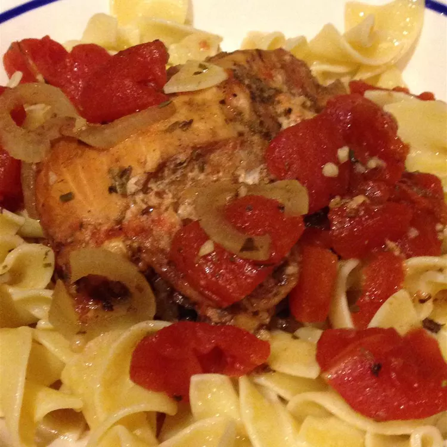

Slow Cooker Balsamic Chicken

Description
So easy and so good. I use frozen chicken breasts in the slow cooker, simmered on High for 4 hours. The sauce is not thick, it is a bit runny, but very tasty. Add tomato paste if you want it thicker. Serve on top of pasta and sprinkle with Parmesan cheese. I use one can of crushed tomatoes and one can of diced tomatoes.
Ingredients
- 2 tablespoons olive oil
- 4 skinless, boneless chicken breast halves, or more to taste
- salt and ground black pepper to taste
- 1 onion, thinly sliced
- 4 cloves garlic
- 1 teaspoon dried oregano
- 1 teaspoon dried basil
- 1 teaspoon dried rosemary
- ½ teaspoon dried thyme
- ½ cup balsamic vinegar
- 2 (14.5 ounce) cans crushed tomatoes
Steps
- Drizzle olive oil into the slow cooker. Place chicken breasts on top of oil and season each breast with salt and pepper. Top chicken breasts with onion slices, garlic, oregano, basil, rosemary, and thyme. Drizzle balsamic vinegar over seasoned breasts and pour tomatoes on top.
- Cook in the slow cooker set to High until chicken is no longer pink in the center and the juices run clear, about 4 hours.